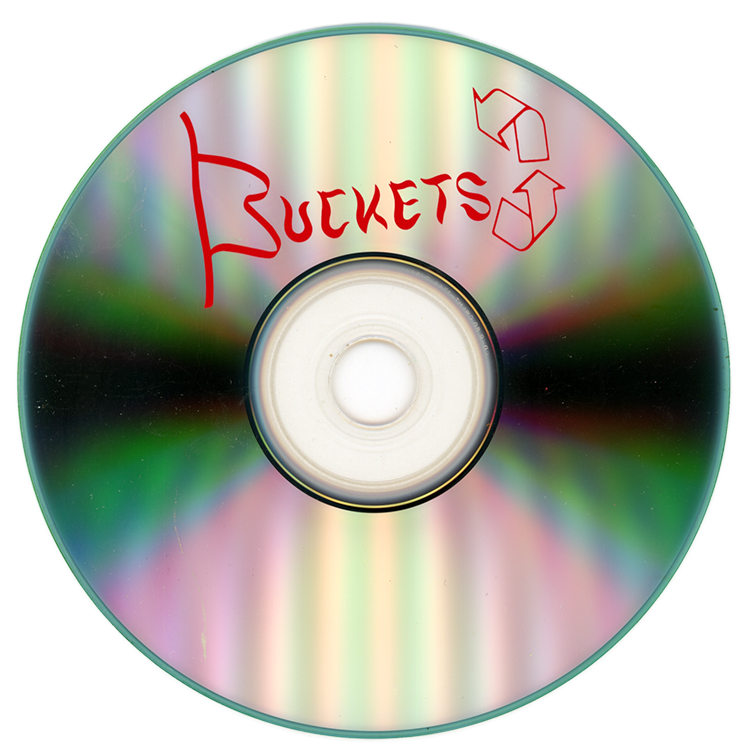

Does the hat have a protective function, or is it simply a trademark? Where is my hat? I take, from right, from left, here, there, everywhere. Its tones, its colors, its nuances. I fix them, I bring them together. What’s taking so long? Time stops. The truth is, if you go to the casino and you lose money, what’s the complaint if you knew that’s how it goes? One thing leads to another. There is a mysterious affinity between the sterility of wide open spaces and that of gambling. And a lot of problems are buried in the desert. Once you’re out the front door you’re still in the middle of the fucking desert. They make lines. They become objects, rocks, trees, without me thinking about it. If I pass too high or too low, everything is botched. Illuminated manuscripts. If I ever see a hat on a bed in this house man, like you’ll never see me again. I’m gone. Hello! A world delineated in thick, black lines with stark, harsh color. Ooo, ahh, ohh! The way you wear your hat. And Hatman. The way you haunt my dreams. To thicken the plot. And I’m the Hatman. Hatman ambient music. The worst and final evil. Flip it and reverse it. Fire! We burned it because we’d never be as talented as Michael Jackson. Not as you would like it to be. You have to burn yourself down to ashes, otherwise there’s no point. Kerosene. I think some people take it too seriously. Take your hat off boy, that’s a dollar bill. Look over here. Damn! How beautiful it is… look at this dog. Shhh. This is the story dogs tell. Who wants to pet this wolf? The master. He had his blanket wrapped around him and his head down. And everybody wants to be the lucky guy. He fell down. What’s the most you ever lost on a coin toss? Your life just turns into a bucket of stories with a little bitty hole in the bottom. Or a bucket full of holes with a little bitty story in the bottom. Ready? Go. Great job man. You’re a natural on the buckets. Time’s up. I do a lot of animalistic type movements. I think some people don’t take it seriously enough. I’ve come to understand that a bucket is the inverse of a hat. Objects are material and metaphor. Hello! You take the hat and flip it. Round and around we go. Up and around we go. Now you have a bucket. Downpour. Opposites collapse. It’s the I-Ching, you know about that? I know about John Cage and Brian Eno and random creative operation of things. One, two, three, four, five. A throw of dice. Which is undoubtedly art. And again there’s no right or wrong way. And it can he changed throughout a record. Oh I’m sounding the boring alarm. Guy’s tossing it up. To tick it, tock it, turn it true. To bang from it a savage blue. Jangling the metal of the strings. A game which would be nothing else but play. Whether it’s luck, randomness, chaos theory, however you want to think about it. There you go. You can swing it back around. Ah ha ha ha ha ah ah ah ah. Woof woof. Aaaaaahhh. The dice are thrown against the sky. Momentum and form. It’s almost like rock music, the amount of energy it generates. A true throw of the dice to displace what appears fixed. You carry around with you at all times two buckets. One of them is filled with gasoline. Set me on fire. Kerosene. It’s getting kind of hot in here. Thus while both are artifacts, the bucket anchors us in pragmatic being. The hat opens us to symbolic being. I want to bang on the drum all day. Working, building, never stopping, never sleeping. Working, making, some for selling, some for keeping. It is when the dice are in the air. And as long as they are there, time stops. On his head a bucket of chicken bones. It’s spatial, you can put a hat on it. Why why why why why why why? And then you kick the bucket. That’s bad. Now we’ve all heard of pulling the rabbit out of the hat. But has anyone heard of pulling a hat out of a rabbit? We need a total artwork of leadership, of conversation, and empathy in all these new fields. We can’t just concentrate on functionality. Every though emits a throw of dice. It is a system designed to perform with the constant possibility of slapstick failure. Six! Buckets of rain, buckets of tears. Got all them buckets coming out if my ears. Buckets of moonbeams in my hands. An unpredictable, unscripted unfolding. Getting more chips at the table. B-b-but… Bet. Get a bet down somewhere to win. Here we go. I got the horse right here. All we are talking about is the ability to take whatever cards, deal them out, and turn them into a winning hand. We can reassign function, and expose the contingency of object meanings. You create a new branch. They are not fixed in essence but emerge from human practice. Buckets. I said explain it to me, not talk science. A directive for risk taking. Give me the dice. Through a systematic mind. The system and mind both wrong. You failed. The literal burning of value. The literal burning of value. Don’t mean a fucking thing, does it? You’ve seen me roll for a hundred G’s, but I got a little more than dough riding on this one. While Mona Lisas and Mad Hatters… Buckets. And this is our presentation on the bucket sort algorithm. I found a song. A true throw of the dice to displace what appears fixed. Upside down. This is getting serious. The inverse of a hat. A bucket. Buckets! My life got flipped, turned upside down. Take your hat off, take your hat off. Boom, see that grab? So it rolls off… Shit. As long as the red dice are in the air, the gambler has hope. Which self should I be today? You got to be nuts, said the mad hatter. Yeah, let’s go fucking nuts. And you’re gonna need a crew as nuts as you. Who’s you have in mind? As I looked more closely at them, I became aware of the particles that make up my body. Each one of us is a set of shifting molecules spinning in ecstasy. In the near future, worn out things will be made new again by reconfiguring their molecules. And the eye in the sky is watching us all. You of all people should know, in your hotel, there’s always someone watching. He finally got me, but there’s just one thing that’s bothering me. I wonder if there could have been more than one of them little guys? Do you ever feel like there’s a thousand people locked inside of you? I just don’t think I know where they did get to. But it’s your memory that keeps them glued together, keeps all those people from fighting one another. Look what your brother did to the door. You are not one, you are multiple, and you are yourself. You are not lost because you are multiple. Turn them upside down! He’s fixing to make a fire somewhere out there in all that dark and all that cold. Nature always manages, when one respects it, to say what it signifies. Oh, I was feeling some kind of tension between ingredients and recipe. She sits down. No one knows the world is upside-down. Watches how it spins around. No one knows the world is upside-down. She sits down. No one knows the world is upside-down. Watches how it spins around. No one knows the world is upside-down. My mind is a recycling bin. We remain rooted in the accessible, popular forms. The impermanence of function. The tension between designed intention and contingent execution. Only opera signers make art with their mouths. Pick up my hat. Pick up my hat. Pick up my hat. Electric light under a blazing sun. We couldn’t turn around. But we change our ideas every day. Until we were upside down. We’re still discovering the reasons every day. I’ll be the bad guy now. Buckets! Function is not essential. There is a material improvisation. Would you buy this hat? Flip it and reverse it. I want to turn the whole thing upside-down. I just try to take my hat and I turn it around. Take off your hat. And it’s like a switch. Gambling implies risk. I take the risk out of it. Take it right off for you but I haven’t got a hat. Ba-ba-ba-ba-ba-bum. If you don’t play, you can’t win. Unless when that perfect hand comes along you bet big. Mad hatters cappin’ every line. I’m going to keep the hat on. This really says it, you know? It’s really… Hmm. Interesting. A lack of action. Only watchful analysis. A time always comes when you’re tempted to retire from active life. Go away little hippie. The hat chooses you. Time stops. Chamber of horrors. So you protect your head with it? Yes, I protect my head. He is a guardian at the threshold between states. Smoothing, modeling, symbolizing. Grouping, managing, holding. Watching, doubting, rolling, glinting and meditating before stopping at some last point which consecrates it. Her notes came out to us like hoisted water raveling off a bucket at the wellhead. As long as the red dice are in the air, the gambler has hope. The water spoke to him in a deep, serious voice. The mind chases its own tail like a dog. The first thing that impresses me is the fact that every animal has a world. Aaaahhh! Howling at the moon. Awoooo! Some buckets. I’m sorting… what am I sorting? We are speaking about the possibility to create a new world with a dealer bust. That’s all folks.
🎩

♻
🪣